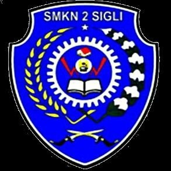

Kenapa Harus SMK ?
Tahun ajaran baru akan segera dimulai. Nah, apa kalian yang telah lulus SMP atau sederajatnya sudah tahu ke mana akan melanjutkan pendidikan? Pasalnya, setelah menuntaskan pendidikan dasar, kamu perlu melanjutkan pendidikan ke jenjang yang lebih tinggi untuk bekal masa depan kalian, lho!
Ada banyak pilihan pendidikan lanjutan setelah SMP, salah satunya adalah SMK. Sebagai pendidikan formal yang menyelenggarakan pendidikan kejuruan setingkat SMA, sekolah ini bertujuan untuk menyiapkan siswa-siswanya agar siap masuk ke dunia kerja, melanjutkan studi, maupun menjadi wirausaha. Berbeda dengan SMA yang lebih banyak porsi untuk teorinya, dalam kesehariannya, siswa SMK akan lebih banyak praktik daripada teori. Porsi untuk praktik mencapai 60 persen sedangkan untuk teori 40 persen saja. Alhasil, para siswanya tentu akan lebih banyak menghabiskan waktu di ruang-ruang praktik, ketimbang di ruang-ruang kelas.
Sedangkan untuk lama pendidikan, secara umum pendidikan SMK bisa ditempuh selama tiga tahun. Akan tetapi, ada beberapa SMK atau program studi tertentu yang ditempuh selama 4 tahun, bahkan kini ada program SMK D-2 Jalur Cepat sehingga lama studi bisa sekitar 4,5 tahun. Meski sedikit lebih lama, tetapi saat lulus kalian sudah dapat ijazah SMK dan diploma dua (D-2) sekaligus. Oya, proses penjurusan juga dimulai sejak awal pendidikan, ya, sehingga siswanya bisa benar-benar fokus terhadap keahlian yang mereka pilih. Tentunya, semua disesuaikan dengan minat peserta didik. Tertarik dengan SMK? Yuk, simak dulu alasan mengapa perlu masuk SMK!